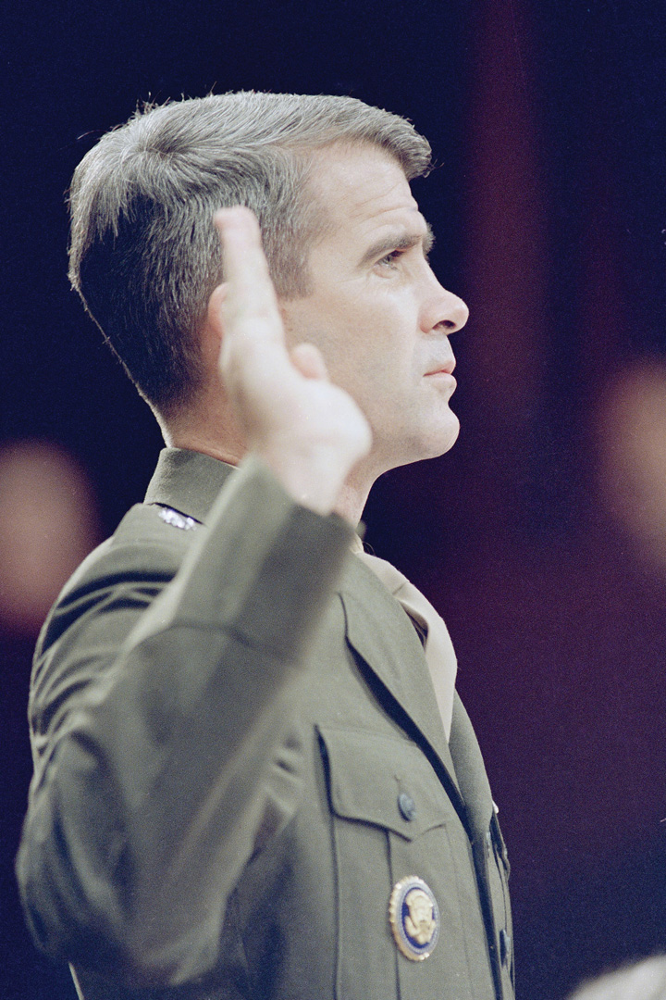

After reading this section, you should be able to answer the following questions:
The Second Amendment reads, “A well-regulated militia being necessary to the security of a free state, the right to keep and bear arms shall not be infringed.” Is this a right of self-defense that is akin to the protection of one’s dwelling guaranteed by other amendments?Joyce Lee Malcolm, To Keep and Bear Arms: The Origins of an Anglo-American Right (Cambridge, MA: Harvard University Press, 1994). Or is it simply a basis for states to build militias, balancing off the standing army of the national government—in which case the gradual replacement of volunteer state militias by the National Guard rendered the Second Amendment obsolete?H. Richard Uviller and William G. Merkel, The Militia and the Right to Arms, Or, How the Second Amendment Fell Silent (Durham, NC: Duke University Press, 2002).
Most crime rates in the United States are similar to those of countries such as Canada or Australia. But the United States has a far higher rate of violent crime, in part because of the greater availability of firearms. A large majority of the public supports restrictions on the sale of firearms, but few policies have been enacted to do so. Although opponents of gun control are outnumbered, they are more likely than supporters to vote on this issue.
Policy debate on gun control usually occurs only after a dramatic, heavily covered news event like an assassination or a massacre at a school. One political scientist described the result as “furious politics, marginal policy.”Robert J. Spitzer, The Politics of Gun Control (Chatham, NJ: Chatham House, 1995), 168. For example, after the killings of Martin Luther King Jr. and Robert Kennedy in 1968, Congress debated President Lyndon Johnson’s proposal for a federal system of firearm registration and licensing of gun owners but passed only limited, ineffective legislation. In 1994, dramatic fights over banning assault weapons and mandating a waiting period for gun purchases produced a law with huge loopholes when it failed to cover gun shows.
The “right to keep and bear arms” has been debated by the public and politicians more than by courts. But in June 2008, the Supreme Court, by a vote of 5–4, ruled that individuals have the right to bear arms. This decision, an interpretation of the Second Amendment, struck down the District of Columbia’s thirty-two-year-old law banning the possession of handguns.District of Columbia v. Heller, 554 US 570 (2008). In June 2010, the Court, again by a vote of 5–4, applied the ruling to cities and states by overturning Chicago’s ban on handguns.McDonald v. Chicago, 561 US ___, 130 S.Ct. 3020 (2010). The Court has not prohibited all legislation and limitation of guns, but such governmental actions would likely conflict with the Court’s interpretation of the Second Amendment.
The Fourth Amendment prevents the government from conducting “unreasonable searches and seizures.” A reasonable search is conducted with a warrant issued by a judge and based on probable cause. What is “unreasonable” varies with how much privacy people can expect when they are being searched. Cars are less private than houses, so rules for searches of cars are less stringent. And government agencies can state reasons to compel persons not suspected of a crime to submit to searches and seizures. The goal of preventing airplanes from being hijacked authorizes mandatory searches of persons and their property before boarding aircraft and allows the confiscation of objects deemed dangerous.
New technologies complicate searches and seizures. In 1967, the Supreme Court ruled that the Fourth Amendment did not simply restrict physical entry: it “protects people, not places.”Olmstead v. United States, 277 US 438 (1928) and Katz v. United States, 389 US 347 (1967). The pivotal test is whether a person has “a legitimate expectation of privacy” regardless of the technological means used to search. Thus the Court has held that the use of heat-sensing devices able to find intensive marijuana farms inside closets requires a search warrant as much as would a physical entry to one’s house.Kyllo v. US, 533 US 27 (2001).
New technologies can also intrude into formerly private domains hitherto free from the potentially prying eye of government. For example, e-mail passes through many portals en route to delivery, each of which may be available for search without the sender’s or receiver’s knowledge. E-mail and web searches are still available in shadowy form even after the hard drive has seemingly been erased, and they can be searched for key words or other patterns efficiently. Police and prosecutors now have new weapons at their disposal in tracking down possible criminal activity.
The massive computerization of information tempts the government even more. In May 2004, the Government Accountability Office (GAO) released a report on data mining. It documented 52 federal agencies conducting 122 projects to collect, analyze, and use identifiable information on US persons for national security and law enforcement purposes. These numbers, which omit classified projects, are probably low-ball estimates.
In 2006, newspapers leaked word of a secret executive order signed by President George W. Bush authorizing electronic eavesdropping on computerized and cell phone conversation without a warrant.For revelations and details, see Eric Lichtblau, Bush’s Law: The Remaking of American Justice (New York: Pantheon, 2008). Bush claimed that the inherent powers of the president and Congress’s authorization of force to respond to the 9/11 attacks allowed him to initiate this policy. Members of Congress, unhappy that the program had been put into place without their knowledge, supported legislation obliging the president to seek warrants from a secret court.
The Fourth Amendment’s exclusionary ruleJudicial rule applied to federal and state courts that prohibits the use of evidence in trial when it is not legally obtained. prevents evidence from an illegal search or seizure being introduced against a defendant in court. The Supreme Court adopted this rule for federal cases in 1914 and extended it to states in 1961.
Law enforcement officers have long bridled at the exclusionary rule and claim that “technicalities” allow guilty suspects to be set free. The Supreme Court has permitted the use in trial of seized evidence that would have been “inevitably discovered” even without an unconstitutional search—such as that “in plain view”—or which police officers acquired under a search warrant that they did not know was improperly issued.The cases that established the exclusionary rule are Weeks v. United States, 232 US 383 (1914) and Mapp v. Ohio, 367 US 643 (1961). See, more recently, Nix v. Williams, 467 US 431 (1984); United States v. Leon, 468 US 897 (1984); and Massachusetts v. Sheppard, 468 US 981 (1984).
Collectively, the Fifth, Sixth and Seventh Amendments set forth procedural guarantees known as “rights of the accused,” which exist through the criminal process from accusation to trial to conviction.
The central right of the accused is the presumption that anyone charged with a crime is innocent until proven guilty in court. This rule can be hard to preserve when an accused individual has been subjected to massive unfavorable media attention prior to or during a trial. For example, the police have perfected a technique known as the “perp walk” (for “perpetrator”), allowing television cameras to film the accused—often handcuffed and in prison garb—escorted by police. Such images, repeated over and over again in news broadcasts, can lead viewers to presume guilt rather than innocence.
The Constitution’s Fifth Amendment gives people the right to refuse to answer questions from any entity of government if they claim such responses might lead to criminal prosecution. Claiming this right not to incriminate oneself is popularly called “taking the fifth.” Witnesses may be compelled to testify only if given immunity from prosecution.Quinn v. United States, 349 US 155 (1955); Emspak v. United States, 349 US 190 (1955) and Ullman v. United States, 350 US 422 (1956).
Such restrictions frustrate law enforcement officers, who find confessions among the best means to obtain a guilty verdict.
The right against self-incrimination originally meant only that individuals could not be forced to testify against themselves during their trials. In the 1920s, the Supreme Court threw out convictions for which evidence had been gained by torture or coercion and slowly expanded the right to cover all discussions with all law enforcement officials.
By 1966, the Court was weary of issuing case-by-case decisions about whether the police had gone too far in questioning suspects. In Miranda v. Arizona (384 US 436), the justices, having reviewed numerous police manuals, concluded that police often tried to create an atmosphere designed to intimidate or manipulate the accused into confessing. The justices ruled that law enforcement officials must “demonstrate the use of procedural safeguards” by ensuring that the accused is “adequately and effectively apprised of his rights.” The Miranda decision required a warning to be read to suspects prior to interrogation—this warning is known as Miranda rightsList of rights that the police must tell suspects if their confessions are to be admitted as evidence in court.—without which their statements could not be admitted as evidence in court. Suspects must be notified of the following: that they have the right to remain silent, that whatever they say can be used against them in court, that they have the right to be represented by a lawyer before and during questioning, that they have the right to have a lawyer provided by the court if they cannot afford one, and that they have the right to terminate questioning at any time.
Figure 4.2 Oliver North’s Swearing In at Congressional Hearing
Congressional investigations that provide grants of immunity can complicate judicial proceedings. The conviction of Oliver North, a central figure in the arms-for-money Iran-Contra scandal of the 1980s, was overturned for that reason.
Source: Used with permission from AP Photo/J. Scott Applewhite.
These rights are familiar to anyone who has seen criminal detective movies or television shows.
Infamous Dragnet “Blue Boy” LSD scene
(click to see video)Miranda rights were effectively introduced to the American public when the tough-guy detectives of the sixties television show Dragnet read them to suspects they were arresting.
But are they effective? Police officers view the reading of these rights as a mere technicality. They can get information by appealing to a suspect’s desire to tell his or her story and by acting as if they are on the suspect’s side. Even after suspects invoke Miranda rights, officers can try to change their minds or elicit what they term off-the-record information. Eighty percent of suspects voluntarily waive their rights; many confess.Welsh S. White, Miranda’s Waning Protections: Police Interrogation Practices after Dickerson (Ann Arbor: University of Michigan Press, 2001), especially chap. 7.
Over time, Supreme Court decisions have outlined processes for a suspect to be tried in court. The most important are the following:
This ruling gradually extended to all defendants in federal courts, then to felony defendants in state courts, and eventually to anyone facing any jail time.Johnson v. Zerbst, 304 US 458 (1938); Gideon v. Wainwright, 372 US 335 (1963) and Argersinger v. Hamlin, 407 US 25 (1972). But public defenders are underpaid and overworked. And their convicted clients can win on appeal only if they can show that public defenders made serious errors, depriving them of a fair trial.United States v. Cronic, 466 US 648 (1984) and Strickland v. Washington, 466 US 668 (1984).
Moreover, most charges are resolved prior to trial when a defendant agrees to plead guilty to a lesser charge. They thereby avoid being charged with—and found guilty of—a more serious crime and receiving a more severe sentence, but they lose out on the many protections of trial procedures.
Civil liberties are often impaired during international crises. Witness the “war on terrorism,” which is no exception. While the revelations in April 2004 of abuse and torture of Iraqi prisoners in the Abu Ghraib prison may be a matter more for international law than civil liberties, other rights of the accused were also in question after the terrorist attacks of 9/11.
In October 2001, Congress enacted the USA Patriot Act. Among other things, it authorized the attorney general to detain indefinitely a noncitizen when there are “reasonable grounds to believe” that the person is a threat to national security. Attorney General John Ashcroft praised these policies, correctly observing, “It is difficult for a person in jail or under detention to murder innocent people or to aid or abet in terrorism.”Quoted in Matthew Purdy, “Bush’s New Rules to Fight Terror Transform the Legal Landscape,” New York Times, November 25, 2001, B4.
The Bush administration used these powers vigorously. Hundreds of resident aliens were detained without explanation in the fall of 2001, many in solitary confinement. When the Taliban government was overthrown in Afghanistan in late 2001, American forces captured some ten thousand soldiers and other Afghanis. Many of them were named “enemy combatants” (not “prisoners of war,” who would have greater protection under international law). Shackled and hooded, they were shipped to a military prison at the base at Guantánamo Bay. Some were subjected to abusive interrogation. The base was located on land the United States had leased from Cuba in perpetuity, and thus, according to the Bush administration, it was outside the jurisdiction of the federal judiciary.For a detailed history of abuses in the war on terror, see Jane Mayer, The Dark Side: The Inside Story of How the War on Terror Turned into a War on American Ideals (New York: Doubleday, 2008); and for a critique of the trade-off between liberty and security see David Cole and Jules Lobel, Less Safe, Less Free: Why America Is Losing the War on Terror (New York: New Press, 2007).
Many rights of the accused were directly challenged by these policies: the right to know charges against oneself, the right to counsel, the right to a speedy and public trial, the right to a jury of one’s peers, the right to confront adverse witnesses, and the ability to appeal decisions to a higher court.
In 2004, the Supreme Court upheld the president’s power as commander in chief to name persons as enemy combatants, to hold them indefinitely under Congress’s authorization of military force, and to fashion trial proceedings with less stringent standards of evidence. But that due process required that a citizen held in the United States as an enemy combatant be given a meaningful opportunity to contest the detention’s basis before a neutral decision maker. The Court also ruled that because the United States controlled Guantánamo, all detainees there had the habeas corpus right to go to federal court to challenge their detention.Hamdi v. Rumsfeld, 542 US 507 (2004) and Rasul et al. v. Bush, President of the United States, et al., 542 US 466 (2004)..
In response, the Bush administration began keeping detainees in a camp in Bagram, Afghanistan, in the theater of war, where judges could not go. And Congress passed the Military Commissions Act of 2006, removing the federal courts’ jurisdiction to hear habeas corpus applications from detainees designated as enemy combatants. Then, in 2008, the Supreme Court, by a vote of 5–4, declared the Military Commissions Act unconstitutional, thereby giving back to enemy combatants their habeas corpus rights.Boumediene et al. v. Bush, President of the United States, et al. (Nos. 06-1195 and 06-1196), 476 F. 3d 1981 (2008).
The Eighth Amendment also gives rights to people convicted of a crime. It aims to make the punishment fit the crime and to prohibit “cruel and unusual punishment.” Policies affected by the Eighth Amendment include the length of prison sentences, prison conditions, and the death penalty.
Through the 1970s, prisoners were rarely expected to serve out their full sentences. Parole or “time off for good behavior” gave incentives to cooperate and acquire skills needed to reenter society. But media stories about crimes committed by paroled ex-cons impelled “truth-in-sentencing” laws—mandatory minimums or fixed sentences for given crimes.
States began adopting “three-strikes-and-you’re-out” laws. These typically increase the sentence for a second felony conviction and require life in prison without parole for a third. These lengthy sentences often bear little connection to the gravity of the crimes committed.
Lengthy sentences and the fact that over three-fourths of those put in state or federal prison each year commit nonviolent crimes raise an Eighth Amendment question: does the punishment fit the crime?Steven R. Donziger, ed., The Real War on Crime: The Report of the National Criminal Justice Commission (New York: Harper Collins, 1996), chap. 1. In 2003 the Supreme Court decided that “three strikes” was not so “grossly disproportionate” as to violate restrictions on “cruel and unusual punishment.”Ewing v. California, 538 US 11 (2003) and Lockyer v. Andrade, 538 US 63 (2003). The basis for “proportionality” as an Eighth Amendment test is Solem v. Helm, 462 US 277 (1983).
The United States is the world leader in the proportion of its population that is incarcerated. When you include those on probation or parole, about 3.2 percent of adults live under the criminal justice system’s direct supervision.Steven R. Donziger, ed., The Real War on Crime: The Report of the National Criminal Justice Commission (New York: Harper Collins, 1996), 34; Fox Butterfield, “U.S. ‘Correctional Population’ Hits New High,” New York Times, July 26, 2004, A10.
When prison policies are reexamined, it is less for civil liberties than for their costs. States badly needed to cut expenses when the economic depression that started in 2007 slashed their tax receipts. They instituted sentencing alternatives to prison for first-time offenders, those seeking early parole, and prisoner-release programs.
Prisoners may organize to pursue common interests, such as seeking decent conditions in prison.Ronald Berkman, Opening the Gates: The Rise of the Prisoners’ Movement (Lexington, MA: D. C. Heath, 1979). Inspired by 1960s civil rights movements, they claimed a denial of basic rights. Their perspectives were bolstered by Hollywood films of the 1960s and 1970s, such as Birdman of Alcatraz, Cool Hand Luke, and One Flew Over the Cuckoo’s Nest, that vividly depicted inhumane conditions of involuntary confinement. Some inmates taught themselves to become lawyers and sued the prisons. Starting in the 1960s, the Supreme Court recognized prisoners’ rights to bring suit and said the ban on “cruel and unusual punishment” included prison conditions. While harsh conditions may be part of a convict’s penalty, prisoners cannot be subjected to “unnecessary and wanton” pain by the “deliberate indifference” of authorities.Cooper v. Pate, 378 US 546 (1964); Estelle v. Gamble, 429 US 97 (1976); Wilson v. Seiter, 501 US 299 (1991) and Lewis v. Casey, 516 US 804 (1996).
The death penalty is now reserved for the most serious of crimes: murder and treason. In 1972, the Supreme Court threw out all state laws imposing the death penalty as a violation of due process being arbitrarily applied from one case to the next. In 1976, the Court allowed states to impose capital punishment as long as it is decided on by a jury following a strict process, weighing mitigating and aggravating circumstances to decide if death is the most appropriate punishment.Furman v. Georgia, 408 US 238 (1972); Gregg v. Georgia, 428 US 153 (1976); Woodson v. North Carolina, 428 US 280 (1976). After 1976, thirty-eight states reinstated the death penalty, which by then was endorsed by a strong majority of the public.
The main objection to the death penalty today is that it cannot be applied dependably enough to meet the Bill of Rights’ standards for due process. Death sentences vary greatly based on the race of the convicted murderer and of the murder victim; blacks convicted of murdering a white person are far more likely to receive a death sentence than blacks convicted of murdering a black person (see Note 4.28 "Comparing Content").
Victims and Capital Punishment
Victims are everywhere in the media. But who gets to play the part? For some investigative journalists, the answer is innocent death row inmates. Building on evidence dug up by journalism professor David Protess and his students at Northwestern University, reporters for the Chicago Tribune compiled two devastating series about prisoners sentenced to die on faulty evidence—“Trial and Error” and “The Failure of the Death Penalty in Illinois.” The first story in the series began by listing accusations against prosecutors: “They have prosecuted black men, hiding evidence the real killers were white. They have prosecuted a wife, hiding evidence her husband committed suicide.…They do it to win. They do it because they won’t get punished.”Ken Armstrong and Maurice Possley, “Trial and Error, Part 1: Verdict: Dishonor,” Chicago Tribune, January 10, 1999.
Evidence of mistaken convictions led Illinois governor George Ryan to declare a moratorium on capital punishment and, just before leaving office in 2003, to commute all death penalties to life in prison without parole. Days later, Ryan went on Oprah. The show’s host, Oprah Winfrey, aired two episodes she termed “our show with the governor who emptied death row.” Before the broadcast, Winfrey videotaped interviews with surviving relatives of those whose murderers had been spared the death penalty. She confronted Ryan with this video testimony of survivors describing the gruesome crimes and their sense of betrayal.

Oprah Winfrey and George Ryan
For investigative journalism, the victims are wrongfully convicted death row inmates, whose wrongful convictions justify a halt to the death penalty, so that the state does not put innocent people to death. This focus on the exoneration of the wrongfully convicted, sometimes by dramatic revelations of exculpatory DNA evidence, shifts the media’s frame away from the victims of crime to the victims of prosecution, and may thereby shift public opinion. But for the daytime talk show, the victims are survivors of violent crime who rely on the justice system to give them what Winfrey called “closure.” The future of capital punishment may depend on which frame wins.
The Fifth Amendment includes a takings clauseSection of the Fifth Amendment that bars government from taking private property for public use without “just compensation.”: government must provide “just compensation” (usually market value) when it uses its power of eminent domainGovernment’s power to take private land for public use. to take property for public use, or if government action removes “all the purposes for which it was acquired.”This statement comes from Duquesne Light Company v. Barasch, 488 US 299 (1989).
Some civil liberty advocates propose expanding this right to limit government regulation. They echo Chief Justice Rehnquist, who wrote, “We see no reason why the Takings Clause of the Fifth Amendment, as much a part of the Bill of Rights as the First Amendment or Fourth Amendment, should be relegated to the status of a poor relation.”Dolan v. City of Tigard, 512 US 374 at 392 (1994). Corporations and business associations have funded probusiness legal centers that argue that any regulation restricting a property’s value or use is a “taking” requiring compensation. This approach would throw out such land-use policies as zoning, rent control, wetland conservation laws, and regulations like the Endangered Species Act.For an effective statement of this position, see Richard Epstein, Takings: Private Property and the Power of Eminent Domain (Cambridge, MA: Harvard University Press, 1985).
The Supreme Court has resisted putting property rights front and center. The justices ruled in 2005 against a homeowner who contested the city’s plan to replace her economically depressed neighborhood with an office park, hotel, and conference center. They said that governments have broad discretion to take property for “public use” as long as it is put to a “public purpose,” including economic development, even when the land is transferred to other private owners.Kelo v. New London, 545 US 469 (2005). In reaction, several states began to limit the uses of eminent domain.
A right to privacy is nowhere explicitly named in the Bill of Rights. However, some members of the Supreme Court recognized the right in a 1965 case. They overturned the conviction of executives of Connecticut’s Planned Parenthood for violating a state law that banned advising married couples about the use of birth control and prescribing contraceptives. One justice found privacy implicit in the First, Third, Fourth, and Fifth Amendments. Other justices found it in the Ninth Amendment’s reminder that the Bill of Rights does not exhaust the sum total of liberties.Griswold v. Connecticut, 381 US 479 (1965). Justice applied the right to the states through the due process clause of the Fourteenth Amendment.
In this 1973 decision, the Supreme Court, invoking privacy, recognized a woman’s constitutional right to an abortion in the first three months of a pregnancy.Roe v. Wade, 410 US 113 (1973). Whether to have an abortion was seen as a private decision between a woman and her doctor. Before and since then, a debate has raged between two sides calling themselves “pro-choice” and “pro-life”—a debate and a divide exaggerated by the news media’s preference for vivid conflicts.
Oral Arguments in Roe v. Wade
Listen to oral arguments in Roe v. Wade at http://www.oyez.org/cases/1970-1979/1971/1971_70_18/argument.
The Roe decision mobilized a pro-life movement. Members of Congress sought but failed to obtain the two-thirds majorities necessary for a constitutional amendment declaring that life begins with conception, thereby recognizing the fetus as a “person” able to receive the protection of the Bill of Rights. President Reagan, elected in 1980, also pushed to reverse Roe. States tried to test Roe’s boundaries. The Court initially rejected such efforts as requiring the written consent of the woman’s spouse or her parents, demanding that abortions be performed in a hospital, or enforcing twenty-four-hour waiting periods.
By the end of the 1980s—President Reagan having named new justices to the Supreme Court—the original majority for Roe had eroded. In 1989, the Court limited abortion rights by ruling that the state’s interest in the fetus begins at conception, not viability; states could now regulate abortions in the first trimester.Webster v. Reproductive Health Services, 492 US 490 (1989).
Figure 4.3 Roe v. Wade Anniversary

The justices of the Supreme Court presumably did not realize when they issued the Roe v. Wade decision on January 22, 1973, that its anniversary would be marked by demonstrations by opponents and counterdemonstrations of proponents in front of their building.
Source: Used with permission from AP Photo/Joe Marquette.
When pro-life president George H. W. Bush named David Souter and Clarence Thomas to replace retiring pro-choice justices William Brennan and Thurgood Marshall, Roe seemed doomed. In 1992, the justices considered a Pennsylvania law that required a married woman’s husband to be notified before she could have an abortion and a twenty-four-hour waiting period for a woman to be provided with information about risks and consequences of abortion. But Justice Anthony Kennedy, allying with Souter and Sandra Day O’Connor (a Reagan appointee), jointly wrote an opinion. They declined to overturn Roe’s central tenet that a woman had a right to an abortion prior to the ability of the fetus to live outside the womb. But they scrapped the trimester scheme of Roe and put in a new (if less clear) test of whether a law imposes an “undue burden” on a woman’s right to an abortion. The decision supported most of the restrictions Pennsylvania had placed on abortion. It fit public opinion that was against reversing Roe v. Wade but in support of conditions and exceptions.Planned Parenthood of Southeastern Pennsylvania v. Casey, 505 US 833 (1992).
With the Court’s reaffirmation of Roe, the pro-life movement was on the defensive—until it began focusing on an unusual abortion procedure known technically as “dilate and extract” (D&X). Giving it the unsettling term “partial-birth abortion” and recounting dramatic examples of its use late in a pregnancy, the pro-life side refocused the attention of the media on the fetus and away from the pro-choice emphasis on a woman’s right to decide (with her physician) on abortion without government interference.
In 2003, Congress passed—and President George W. Bush signed—a law banning partial-birth abortion. The law allowed an exception to save the lives of women but no exception for their health. It was the first time since Roe that federal law criminalized an abortion procedure. With President George W. Bush’s two appointees voting in the majority, the Supreme Court upheld the law by a vote of 5–4 in April 2007.Gonzales v. Carhart and Gonzales v. Planned Parent Federation of America, 550 US 124 (2007).
This section covered rights dealing with arms, search and seizure, the accused, punishment, property, and privacy. The Supreme Court has interpreted the Second Amendment as allowing people to bear arms. Freedom from unreasonable searches and seizures is complicated by the development of new technologies. Rights of the accused include the right to be considered innocent until proven guilty, protection against self-incrimination, the Miranda rights, and trial processes. Some policies initiated by the government’s war on terror have challenged these rights. The rights of convicted criminals apply to punishment, prison terms, and the death penalty. Property rights can conflict with the government’s power of eminent domain. Abortion is subject to Supreme Court decisions and political conflict.